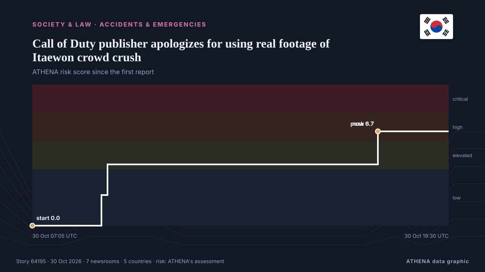

Accidents & emergencies
| 17 Oct | 1 |
|---|---|
| 18 Oct | 0 |
| 19 Oct | 0 |
| 20 Oct | 0 |
| 21 Oct | 0 |
| 22 Oct | 0 |
| 23 Oct | 1 |
| 24 Oct | 2 |
| 25 Oct | 0 |
| 26 Oct | 0 |
| 27 Oct | 3 |
| 28 Oct | 7 |
| 29 Oct | 7 |
| 30 Oct | 3 |

Call of Duty publisher apologizes for using real footage of Itaewon crowd crush
SEOUL, Oct. 30 (Yonhap) -- The makers behind the Call of Duty video game apologi... from Yonhap (English)
Six feared dead in helicopter crash in Indian Himalayan state
The helicopter was flying from Badrinath, a prominent pilgrimage destination for Hindus located in the mountains, to Dehradun city, carrying five passengers and a pilot. from CNA (Channel NewsAsia)
High-speed train collision in Spain: 68 dead, more than 100 injured
MADRID: At least 10 people have died after a major collision involving two high-speed passenger trains in the central Spanish province of Toledo.The accident prompted the suspensi... from Oman Observer
3 killed as two helicopters collide mid-air near Oregon airport in US
The collision involving a Robinson R22 and an Airbus helicopter occurred on Thursday afternoon, with both aircraft crashing in a field adjacent to a highway. from BBC News
One killed, five injured by Afghan firing near Angoor Adda
LOWER SOUTH WAZIRISTAN: In yet another violation of border protocols, Afghan security forces opened unprovoked fire on Pakistan Army border posts and residential areas in the Angoor Adda border… from Dawn
Grieving Spain demands answers for latest rail disaster
One of Europe’s deadliest rail disasters this century struck south of Madrid on Wednesday morning, killing 69 people and injuring dozens more. from Free Malaysia Today
Spanish long jumper Julieta Gallego among victims of deadly train collision
Julieta Gallego, who competed for Madrid-based AD Sprint, among those killed in train crash in Spain. from Al Jazeera English
Iran foreign minister offers condolences to Spain over deadly train crash
Portugal’s government announced that it has offered Spain support through organisations such as CP and Infraestruturas de Portugal, following the train crash in Toledo today that has claimed at least. from Portugal Resident
Nigeria: Taraba Attack Death Toll Hits 58 As Residents Lament Neglect
[Leadership] The death toll from Friday's attack on Binnari community in Karim-Lamido Local Government Area of Taraba State has risen to 58, including 15 people who drowned while fleeing the… from AllAfrica
Xi extends condolences over deadly train collision in Spain
Associated Press Of Pakistan PM expresses grief over devastating train collision in Spain ISLAMABAD, Oct 28 (APP): Prime Minister Muhammad Shehbaz Sharif, Wednesday, expressed his profound grief over… from APP (Associated Press of Pakistan)
NBRB Cites Structural Flaws in Bwerenga Church Collapse
The Lagos State Emergency Management Agency (LASEMA) has confirmed one death and the rescue of three adult males following the collapse of a two-storey building under construction in Fadeyi, Lagos. from Vanguard
US fires senior army general in latest ouster: reports
The United States has fired a top military planner, US media reported, in a surprise shake-up as President Donald Trump appears to be preparing to resume large-scale strikes against Iran. from Al-Monitor
Update / 10 tourists killed in fire at Cox’s Bazar resort
Fire erupts at a resort in Cox’s Bazar, tourist hub in southeastern Bangladesh, fire service confirms. from Express Tribune
Three Italians unaccounted for after Toledo rail disaster
(ANSA) - ROME, 29 OTT - Three Italian nationals are unaccounted for following Wednesday's collision between two trains on a high-speed rail line near Toledo in Spain in which 68 people died, the… from ANSA English
Spain’s deadly train crash adds new complication to Sanchez’s reelection campaign
The crash that killed 68 people in Toledo province has fuelled criticism of railway underinvestment under Pedro Sanchez’s government. from Free Malaysia Today
Emergency declared at US nuclear site after laboratory fire in South Carolina
Radiological surveys find no detectable levels of contamination. from Anadolu Agency (English)
Train crash kills at least 68 in Spain
Spain’s transportation minister said it was ‘inexplicable’ how the disaster happened when a high-speed train rear-ended another train that had stopped on the same track. from NBC News (World)
Survivors of clergy sexual abuse reach $800m. settlement with New York Archdiocese
In addition to the $800 million settlement, the archdiocese agreed to release documents pertaining to sexual offenders in the Church. from The Jerusalem Post
Copa del Rey matches postponed following Spain train collision
The Spanish Football Federation (RFEF) announced on Wednesday the postponement of 24 matches in the first round of the Copa del Rey "as a mark of respect and solidarity" with the victims of a… from Vanguard